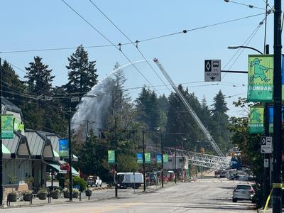

登巴区一个兴建中的柏文地盘昨日傍晚发生大火，吊臂倒塌砸中附近房屋，温市消防及救援服务处（VFRS）称事件中没有市民受伤，记者在现场所见大范围地区仍处于封路状态。
封路范围涵盖登巴街（Dunbar St.）与布伦海姆街（Blenheim St.）之间的一段西41街（W. 41st Ave.），以及西40街（W. 40th Ave.）与西42街（W. 42nd Ave.）之间的一段高灵活街（Collingwood St.）。
记者在现场所见，VFRS人员仍在向起火地盘射水，以确保不会死灰复燃，多名温市警、温市府及卑诗水电公司（BC Hydro）人员在场协调。
不少居住在受影响范围的民众尝试重返家园，但基于安全考虑，警方只容许他们回家收拾必须品，而不能长时间逗留。
封路范围沿途可见有不少火烬散落地上，即使是隔一条街以外的车辆也受波及。
VFRS局长弗赖伊（Karen Fry），事件中没有造成任何市民伤亡，但有数名消防员受轻伤，「对于任何看过现场照片或影片的人来说，应该知道火灾没有造成市民伤亡是非常幸运，消防人员正在尽一切努力扑灭火灾。」
弗赖伊又指，火灾导致地盘吊臂倒塌并砸中一间房屋，「吊臂砸中房屋的中间位置，一个人被困在内，在消防员及警员的帮助下，我们在安全情况下从窗户救出被困住客。」
弗赖伊表示，受地盘火灾馀烬影响，登巴区有另外两间房屋被烧毁。